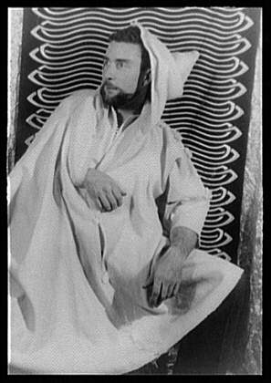
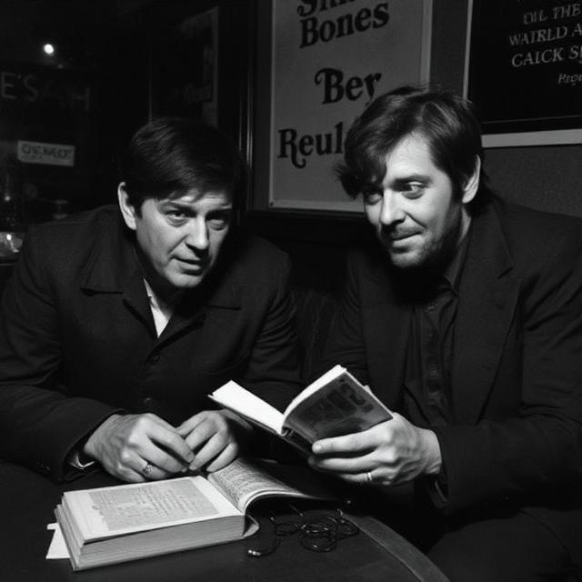
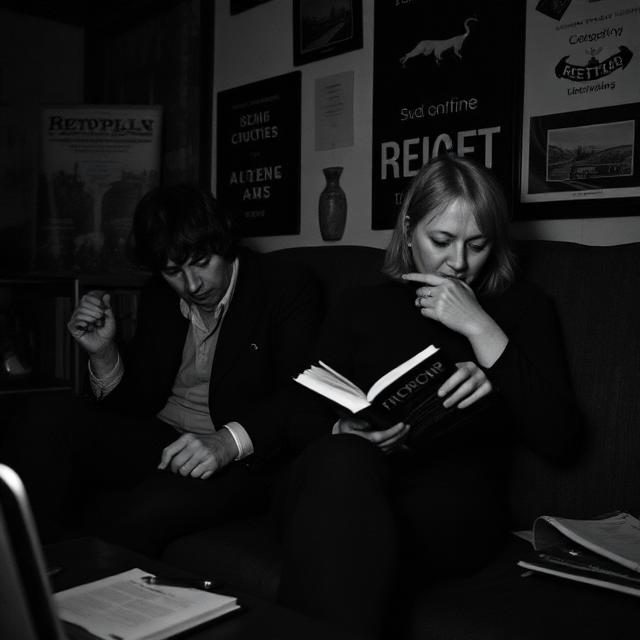
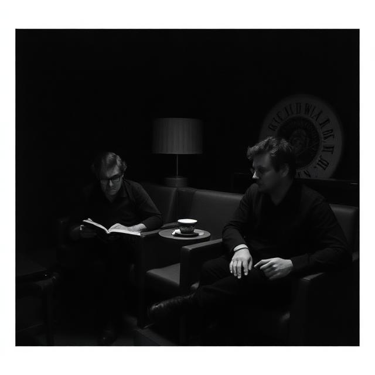

How it began
In the discount corner of a well-known bookshop I picked up Electric Dreams, the catalogue Tate published alongside its exhibition on art and technology before the internet. It was an impulse buy, half-price and heavy. Leafing through it later, my eye caught on two works by Brion Gysin, and stayed there. I did not know the name; I knew only that the marks on the page felt at once handmade and machined, ordered and coming apart.
That double quality was the spark. In all humility I sketched a first, cautious plan for what a small drawing library might do if it took those qualities seriously: treat shapes and words not as clean geometry but as fragile vector material, lines that hesitate, repeat, overshoot, break, and sometimes vanish, yet stay precise enough to send to a pen plotter. p5.gysin is that plan, still modest, still learning.
Brion Gysin (1916–1986)

Gysin was one of the twentieth century’s most restless avant-garde figures: painter, writer, sound experimenter, and inventor of kinetic machines. For much of his life he worked in the shadow of the artists he inspired (above all his lifelong collaborator William S. Burroughs), yet he acted as a quiet catalyst for radical shifts across literature, visual art, sound poetry, and early media art. His work resists a single label, and one thread runs through all of it: the deconstruction of the systems that program us, whether linguistic, visual, or neurological. His 1969 novel The Process reads as a cut-up of memory and invention; his biographer John Geiger observed, “Each of the main characters in The Process is Gysin, and yet none is.”
The cut-up
In 1959, at the Beat Hotel in Paris, Gysin was slicing mounts for his drawings with a razor, using a stack of newspapers as a cutting mat. Cutting through the layers, he noticed that the severed columns beside one another read as strange, funny, oddly coherent new phrases. He began shifting the strips on purpose. What montage and collage had done for painting half a century earlier, the cut-up now did for text, though Tristan Tzara had already shaken a poem from a hatful of cut-up newspaper words in the Dada years. The writer William S. Burroughs took it up as the method behind his cut-up novels, and rated its inventor without hedging: “Brion Gysin was the only man I ever respected.” In p5.gysin this survives as textCutup(): type is sliced into unstable bands and offset until the word starts to come apart.
“Writers don’t own their words. Since when do words belong to anybody?”
Brion Gysin
Permutation poems and early computation
From 1958 Gysin also took a single short phrase and ran it through every possible reordering of its words, roughly forty-three permutation poems over the following decades. Around 1960 the mathematician Ian Sommerville automated the process on an early computer, making these among the first documented works of computer-generated poetry. The best known, I AM THAT I AM, dissolves a line of scripture into hypnotic, chant-like repetition. The optional text addon echoes this directly: GysinText.permute() rearranges a phrase as language before textCutup() breaks each result into vector contours.
Asemic calligraphy and the grid
After studying Japanese calligraphy and living in Morocco, Gysin made his “written paintings”: horizontal Arabic script crossed with vertical Japanese grass script, the canvas turned as he worked until legible meaning dissolved into a dense, rhythmic grid of pure graphic energy. He read that grid two ways at once: as magical sigil, and as a portrait of the modern city’s facades of control. Late in life he even carved his motifs into a rubber roller to unspool them across metres of paper. The composition layer in p5.gysin (asemic(), letters(), symbols(), and grid()) is a small nod to those fields of not-quite-writing.
The word itself is Greek: a- (without) and sema (sign). Nineteenth-century medicine used it for a symptom, asemia: the inability to read a sign as a sign. The visual poets Tim Gaze and Jim Leftwich reclaimed it in the 1990s for wordless, text-like marks made to mean nothing on purpose.
The Dreamachine
Gysin’s most literal attempt to bypass representation altogether was the Dreamachine (1959–61), built with Sommerville: a slotted cylinder spinning on a record player around a bright bulb, flickering at 8–13 pulses per second, the frequency of the brain’s alpha rhythm. Viewed with the eyes closed, it induced moving colour and pattern generated entirely by the viewer’s own nervous system. It is often called the first artwork made to be seen with the eyes shut, and it anticipates the digital and neuro-aesthetic art of our own century. p5.gysin does not flicker, but it shares the underlying idea: perception itself is the material.
The rooms, imagined
None of the photographs below exist. They are machine-generated imaginations of the rooms this tradition lived in: the reading, the table talk over open books, the walls of posters. Look closely and the generator has already done this library’s work for it - every printed word on those walls comes out halfway rubbed out, titles dissolving into letters that never spelled anything. They hang here as plates, not as documents; the real archive stays in the sources below.



What p5.gysin borrows (and what it doesn’t)
The library turns Gysin’s hand-made deconstructions into code: cut-up into textCutup(), permutation into GysinText.permute(), the asemic field into the composition layer, and worn, human print into wobble, dropout, rubout, drift, and selective ink bleed. It stays vector-first and plotter-ready on purpose: the pen plotter, drawing with a real nib, is itself a bridge between the handmade and the algorithmic, not far from Gysin’s carved roller or his machine-cut films.
It borrows procedures and a spirit, not the works themselves. p5.gysin is an experimental, teaching-oriented tribute: a study made in admiration, not a reconstruction and not a claim to represent Gysin’s art. The real works are his; this is only a way of thinking with them in a browser.
See the work (and sources)
Gysin’s own works are still in copyright and are not reproduced here. To see them, the Musée d’Art Moderne de Paris holds the largest collection and mounted the retrospective The Last Museum; the Los Angeles County Museum of Art holds the original Third Mind manuscript; and the Dreamachine and a group of Gysin works featured in Tate’s Electric Dreams, the catalogue that started this whole thing.